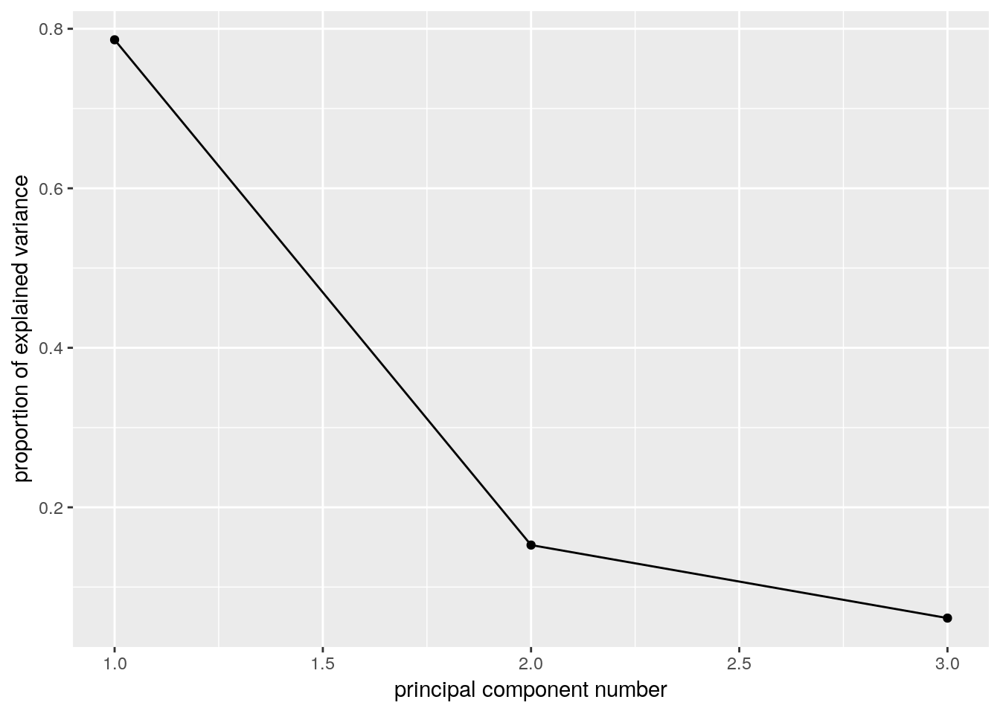
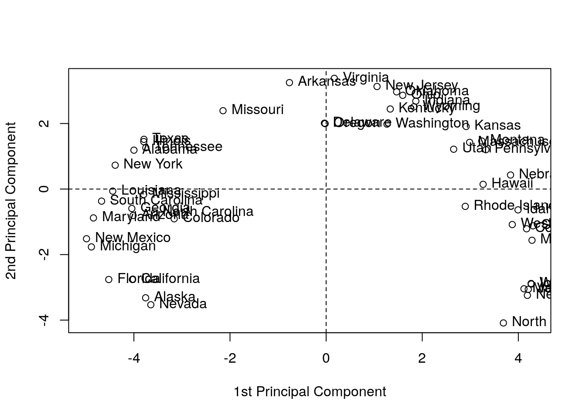

Chapter 11 Unsupervised Learning
This chapter deals with machine learning problems which are unsupervised. This means the machine has access to a set of inputs, \(x\), but the desired outcome, \(y\) is not available. Clearly, learning a relation between inputs and outcomes makes no sense, but there are still a lot of problems of interest. In particular, we may want to find a compact representation of the inputs, be it for visualization of further processing. This is the problem of dimensionality reduction. For the same reasons we may want to group similar inputs. This is the problem of clustering.
In the statistical terminology, with some exceptions, this chapter can be thought of as multivariate exploratory statistics. For multivariate inference, see Chapter 9.
11.1 Dimensionality Reduction
11.1.1 Principal Component Analysis
Principal Component Analysis (PCA) is such a basic technique, it has been rediscovered and renamed independently in many fields. It can be found under the names of Discrete Karhunen–Loève Transform; Hotteling Transform; Proper Orthogonal Decomposition; Eckart–Young Theorem; Schmidt–Mirsky Theorem; Empirical Orthogonal Functions; Empirical Eigenfunction Decomposition; Empirical Component Analysis; Quasi-Harmonic Modes; Spectral Decomposition; Empirical Modal Analysis, and possibly more21. The many names are quite interesting as they offer an insight into the different problems that led to PCA’s (re)discovery.
Return to the BMI problem in Example 11.1. Assume you wish to give each individual a “size score”, that is a linear combination of height and weight: PCA does just that. It returns the linear combination that has the largest variability, i.e., the combination which best distinguishes between individuals.
The variance maximizing motivation above was the one that guided Hotelling (1933). But \(30\) years before him, Pearson (1901) derived the same procedure with a different motivation in mind. Pearson was also trying to give each individual a score. He did not care about variance maximization, however. He simply wanted a small set of coordinates in some (linear) space that approximates the original data well.
Before we proceed, we give an example to fix ideas. Consider the crime rate data in USArrests, which encodes reported murder events, assaults, rapes, and the urban population of each american state.
head(USArrests)## Murder Assault UrbanPop Rape
## Alabama 13.2 236 58 21.2
## Alaska 10.0 263 48 44.5
## Arizona 8.1 294 80 31.0
## Arkansas 8.8 190 50 19.5
## California 9.0 276 91 40.6
## Colorado 7.9 204 78 38.7Following Hotelling’s motivation, we may want to give each state a “crimilality score”. We first remove the UrbanPop variable, which does not encode crime levels. We then z-score each variable with scale, and call PCA for a sequence of \(1,\dots,3\) criminality scores that best separate between states.
USArrests.1 <- USArrests[,-3] %>% scale
pca.1 <- prcomp(USArrests.1, scale = TRUE)
pca.1## Standard deviations (1, .., p=3):
## [1] 1.5357670 0.6767949 0.4282154
##
## Rotation (n x k) = (3 x 3):
## PC1 PC2 PC3
## Murder -0.5826006 0.5339532 -0.6127565
## Assault -0.6079818 0.2140236 0.7645600
## Rape -0.5393836 -0.8179779 -0.1999436Things to note and terminology:
Distinguishing between states, i.e., finding the variance maximizing scores, should be indifferent to the average of each variable. We also don’t want the score to be sensitive to the measurement scale. Formally, we say we want the scores to be affine invariant. We thus perform PCA in the z-score scale of each variable, obtained with the
scalefunction.PCA is performed with the
prcompfunction. It returns the contribution (weight) of the original variables, to the new crimeness score. These weights are called the loadings . Z-scored loadings are known as Rotations, which is also the term in theprcompoutput. If you are confused between loadings and rotations, see this Cross Validated entry.The number of possible scores, is the same as the number of original variables in the data.
The new scores are called the principal components, labeled
PC1,…,PC3in our output. They are computed by summing the original variables weighted by their loadings.The loadings/rotation on PC1 tell us that the best separation between states is along the average crime rate. Why is this? Because all the \(3\) crime variables have a similar loading on PC1.
The other PCs are slightly harder to interpret, but it is an interesting exercise.
If we now represent each state, not with its original \(4\) variables, but only with the first \(2\) PCs (for example), we have reduced the dimensionality of the data.
11.1.1.1 Mathematics of PCA
What is the mathematical problem that is actually solved with PCA? Finding a linear combination (\(v\)) of the original variables (\(x\)), so that the new score/index (\(v'x\)) best separates individuals. Best separation implies that the variance of \(v'x\) is maximal. Clearly, \(Var[v'x]\) may explode if any \(v\) is allowed, so we need to pick \(v\) from some “fair” set. It is most convenient, mathematically, to constrain the \(l_2\) norm to some constant: \(\Vert v \Vert^2_2=\sum v_j^2=1\). The first “best separating score”, known as the first principal component (PC), is thus \[v_1'x \quad s.t. \quad v_1=argmax_{v}\{Var[v'x], \text{ and } \Vert v \Vert_2=1 \} .\] The second PC, is the same, only that it is required to be orthogonal to the first PC: \[v_2'x \quad s.t. \quad v_2=argmax_{v}\{Var[v'x], \text{ and } \Vert v \Vert_2=1, \text{ and } v'v_1=0 \} .\] The construction of the next PCs follows the same lines: find a linear transformation of the data that best separates observations and is orthogonal to the previous PCs.
11.1.1.2 How Hard is the PCA Problem?
Estimating all the PCs in the data is well defined algebraically if \(n>p\), in which case \(p\) PCs are computable. This is the algebraic part of the problem, which is rather easy, and solved with SVD.
If viewing PCA as inference tool, we may ask about its statistical performance. It turns out that PCA has the same statistical difficulty as estimating a covariance matrix. As we already saw in the Multivariate Statistics Chapter (9), estimating covariances is a hard task, we thus recommend: don’t trust your PCs if \(n\) is not much larger than \(p\), and see the bibliographic notes for further details.
11.1.2 Dimensionality Reduction Preliminaries
Before presenting methods other than PCA, we need some terminology.
Variable: A.k.a. dimension, or feature, or column. A vector of \(p\) measurements in their raw scale.
Feature Mapping: A.k.a. variable transformation, or data augmentation. A measurement in a new, transformed, scale.
Data: A.k.a. sample, observations. Will typically consist of \(n\), vectors of dimension \(p\). We typically denote the data as a \(n\times p\) matrix \(X\).
Data space: A.k.a. feature space. The space of all possible values of \(X\). We denote with \(\mathcal{X}\).
Network: A representation of the similarities (or dissimilarities) between the \(n\) units in the data. We denote with \(\mathcal{G}\), and may be encoded in an \(n \times n\) matrix.
Manifold: A generalization of a linear space, which is regular enough so that, locally, it has all the properties of a linear space. We will denote an arbitrary manifold by \(\mathcal{M}\), and by \(\mathcal{M}_q\) a \(q\) dimensional22 manifold.
Embedding: Informally speaking: a “shape preserving” mapping (see figure below). We denote an embedding of the data \(X\), into a manifold \(\mathcal{M}\) by \(X\mapsto \mathcal{M}\).
Embedding Function: If the embedding is not only an algorithm, but rather, has a functional form representation, we call it an embedding function \(f\). Given such a function, we are not restricted to embeddings of the original data, \(X\), but may also embed new data points from \(\mathcal{X}\): \(f:\mathcal{X}\mapsto\mathcal{M}\).
Generative Model: Known to statisticians as the sampling distribution. The assumed stochastic process that generated the observed \(X\).
Various embedding algorithms. No embedding of the sphere to the plane is perfect. This is obviously not new. Maps makers have known this for centuries!Source: http://sci kit-learn.org/stable/auto_examples/manifold/plot_manifold_sphere.html#sphx-glr-auto-examples-manifold-plot-manifold-sphere-py
There are many motivations for dimensionality reduction:
Scoring: Give each observation an interpretable, simple score (Hotelling’s motivation).
Latent structure: Recover unobservable information from indirect measurements. E.g: Blind signal reconstruction, CT scan, cryo-electron microscopy, etc.
Signal to Noise: Denoise measurements before further processing like clustering, supervised learning, etc.
Compression: Save on RAM ,CPU, and communication when operating on a lower dimensional representation of the data.
11.1.3 Latent Variable Generative Approaches
All generative approaches to dimensionality reduction will include a set of latent/unobservable variables, which we can try to recover from the observables \(X\). The unobservable variables will typically have a lower dimension than the observables, thus, dimension is reduced. We start with the simplest case of linear Factor Analysis.
11.1.3.1 Factor Analysis (FA)
FA originates from the psychometric literature. We thus revisit the IQ (actually g-factor23) Example 11.2:
We may try to estimate \(S A\) by assuming some distribution on \(S\) and \(\varepsilon\) and apply maximum likelihood. Under standard assumptions on the distribution of \(S\) and \(\varepsilon\), recovering \(S\) from \(\widehat{S A }\) is still impossible as there are infinitely many such solutions. In the statistical parlance we say the problem is non identifiable, and in the applied mathematics parlance we say the problem is ill posed.
The FA terminology is slightly different than PCA:
Factors: The unobserved attributes \(S\). Akin to the principal components in PCA.
Loading: The \(A\) matrix; the contribution of each factor to the observed \(X\).
Rotation: An arbitrary orthogonal re-combination of the factors, \(S\), and loadings, \(A\), which changes the interpretation of the result.
The FA literature offers several heuristics to “fix” the identifiability problem of FA. These are known as rotations, and go under the names of Varimax, Quartimax, Equimax, Oblimin, Promax, and possibly others.
Because of their great similarity, FA is often confused with PCA. For a discussion of the similarities and dissimilarities, see this excellent StackExchange Q.
11.1.3.2 Independent Component Analysis (ICA)
Like FA, independent compoent analysis (ICA) is a family of latent space models, thus, a meta-method. It assumes data is generated as some function of the latent variables \(S\). In many cases this function is assumed to be linear in \(S\) so that ICA is compared, if not confused, with PCA and even more so with FA.
The fundamental idea of ICA is that \(S\) has a joint distribution of non-Gaussian, independent variables. This independence assumption, solves the the non-uniqueness of \(S\) in FA. As such, it can be thought of as a type of rotation in FA. Then again, if the assumed distribution of \(S\) is both non-Gaussian, and well justified, then ICA is well defined, and more than just an arbitrary rotation of FA.
Being a generative model, estimation of \(S\) can then be done using maximum likelihood, or other estimation principles.
ICA is a popular technique in signal processing, where \(A\) is actually the signal, such as sound in Example 11.3. Recovering \(A\) is thus recovering the original signals mixing in the recorded \(X\).
11.1.4 Purely Algorithmic Approaches
We now discuss dimensionality reduction approaches that are not stated via their generative model, but rather, directly as an algorithm. This does not mean that they cannot be cast via their generative model, but rather they were not motivated as such.
11.1.4.1 Multidimensional Scaling (MDS)
MDS can be thought of as a variation on PCA, that begins with the \(n \times n\) graph of distances between data points \(\mathcal{G}\); In contrast to PCA which operates on the original \(n \times p\) data \(X\). The term graph is typically used in this context, but saying network instead of graph is more appropriate. This is because a graph encodes connections (topology) and networks encode distances (geometry). Put differently, a graph can be encoded in a matrix of zeroes and ones, and a network with real numbers.
MDS aims at embedding \(\mathcal{G}\) into the plane, typically for visualization, while preserving the original distances. Basic results in graph/network theory suggest that the geometry of a graph cannot be preserved when embedding it into lower dimensions (Graham 1988). The different types of MDSs, such as Classical MDS, and Sammon Mappings, differ in the stress function that penalizes for the geometric distortion caused by the embedding.
11.1.4.2 Local Multidimensional Scaling (Local MDS)
Local MDS is aimed at solving the case where Euclidean distances are inappropriate. Instead of using the graph of Euclidean distances between any two points, \(\mathcal{G}=X'X\), local MDS computes \(\mathcal{G}\) starting with the Euclidean distance between pairs of nearest points. Longer distances are solved as a shortest path problem. This is akin to computing the distance between Jerusalem to Beijing by computing Euclidean distances between Jerusalem-Bagdad, Bagdad-Teheran, Teheran-Ashgabat, Ashgabat-Tashkent,and so on. Because the geographical-distance between these cities is well approximated with the Euclidean distance, summing local distanes is better than operating with the Euclidean distance between Jerusalem and Beijing.
After computing \(\mathcal{G}\), local MDS ends with the usual MDS for the embedding. Because local MDS ends with a regular MDS, it can be seen as a non-linear embedding into a linear manifold \(\mathcal{M}\).
11.1.4.3 Isometric Feature Mapping (IsoMap)
Like localMDS, only that the embedding, and not only the computation of the distances, is local.
11.1.4.4 Local Linear Embedding (LLE)
Very similar to IsoMap 11.1.4.3.
11.1.4.5 Kernel PCA (kPCA)
Returning to the BMI example (11.1); what if we want to learn scores that best separate between individuals, but unlike PCA, are non-linear in the original features. Kernel PCA does just that, only that it restricts the possible scores to simple functions of the original variables. The allowed functions resides in a function space called Reproducing Kernel Hilbert Space (RKHS), this giving kPCA it’s name.
11.1.4.6 Sparse PCA (sPCA)
sPCA is a type of PCA where the loadings are sparse. This means that PCs are linear combinations of a small number of variables. This makes sPCA easier to interpret. Note that the varimax rotation of factor-analysis has a similar goal: create factors with minimally contributing variables, so that they are easy to explain.
11.1.4.7 Sparse kernel PCA (skPCA)
A marriage between sPCA and kPCA: generate scores that are non linear transformations of a minimal number of variables, each.
11.1.4.8 Correspondence Analysis (CA)
What if \(x\) is not continuous, i.e., \(\mathcal{X}\neq \mathbb{R}^p\)? We could dummy-code \(x\), and then use plain PCA. A more principled view, when \(x\) is categorical, is that of Correspondence Analysis.
11.1.5 Dimensionality Reduction in R
11.1.5.1 PCA
We already saw the basics of PCA in 11.1.1. The fitting is done with the prcomp function. The bi-plot is a useful way to visualize the output of PCA.
# library(devtools)
# install_github("vqv/ggbiplot")
ggbiplot::ggbiplot(pca.1) 
Things to note:
- We used the
ggbiplotfunction from the ggbiplot (available from github, but not from CRAN), because it has a nicer output thanstats::biplot. - The bi-plot also plots the loadings as arrows. The coordinates of the arrows belong to the weight of each of the original variables in each PC. For example, the x-value of each arrow is the loadings on the first PC (on the x-axis). Since the weights of Murder, Assault, and Rape are almost the same, we conclude that PC1 captures the average crime rate in each state.
- The bi-plot plots each data point along its PCs.
The scree plot depicts the quality of the approximation of \(X\) as \(q\) grows, i.e., as we add more and more PCs to explain the data. This is depicted using the proportion of variability in \(X\) that is removed by each added PC. It is customary to choose \(q\) as the first PC that has a relative low contribution to the approximation of \(X\). This is known as the “knee heuristic”.
ggbiplot::ggscreeplot(pca.1)
See how the first PC captures the variability in the Assault levels and Murder levels, with a single score.

More implementations of PCA:
# FAST solutions:
gmodels::fast.prcomp()
# More detail in output:
FactoMineR::PCA()
# For flexibility in algorithms and visualization:
ade4::dudi.pca()
# Another one...
amap::acp()11.1.5.2 FA
fa.1 <- psych::principal(USArrests.1, nfactors = 2, rotate = "none")
fa.1## Principal Components Analysis
## Call: psych::principal(r = USArrests.1, nfactors = 2, rotate = "none")
## Standardized loadings (pattern matrix) based upon correlation matrix
## PC1 PC2 h2 u2 com
## Murder 0.89 -0.36 0.93 0.0688 1.3
## Assault 0.93 -0.14 0.89 0.1072 1.0
## Rape 0.83 0.55 0.99 0.0073 1.7
##
## PC1 PC2
## SS loadings 2.36 0.46
## Proportion Var 0.79 0.15
## Cumulative Var 0.79 0.94
## Proportion Explained 0.84 0.16
## Cumulative Proportion 0.84 1.00
##
## Mean item complexity = 1.4
## Test of the hypothesis that 2 components are sufficient.
##
## The root mean square of the residuals (RMSR) is 0.05
## with the empirical chi square 0.87 with prob < NA
##
## Fit based upon off diagonal values = 0.99biplot(fa.1, labels = rownames(USArrests.1)) 
# Numeric comparison with PCA:
fa.1$loadings##
## Loadings:
## PC1 PC2
## Murder 0.895 -0.361
## Assault 0.934 -0.145
## Rape 0.828 0.554
##
## PC1 PC2
## SS loadings 2.359 0.458
## Proportion Var 0.786 0.153
## Cumulative Var 0.786 0.939pca.1$rotation## PC1 PC2 PC3
## Murder -0.5826006 0.5339532 -0.6127565
## Assault -0.6079818 0.2140236 0.7645600
## Rape -0.5393836 -0.8179779 -0.1999436Things to note:
- We perform FA with the
psych::principalfunction. ThePrincipal Component Analysistitle is due to the fact that FA without rotations, is equivalent to PCA. - The first factor (
fa.1$loadings) has different weights than the first PC (pca.1$rotation) because of normalization. They are the same, however, in that the first PC, and the first factor, capture average crime levels.
Graphical model fans will like the following plot, where the contribution of each variable to each factor is encoded in the width of the arrow.
qgraph::qgraph(fa.1)Let’s add a rotation (Varimax), and note that the rotation has indeed changed the loadings of the variables, thus the interpretation of the factors.
fa.2 <- psych::principal(USArrests.1, nfactors = 2, rotate = "varimax")
fa.2$loadings##
## Loadings:
## RC1 RC2
## Murder 0.930 0.257
## Assault 0.829 0.453
## Rape 0.321 0.943
##
## RC1 RC2
## SS loadings 1.656 1.160
## Proportion Var 0.552 0.387
## Cumulative Var 0.552 0.939Things to note:
- FA with a rotation is no longer equivalent to PCA.
- The rotated factors are now called rotated componentes, and reported in
RC1andRC2.
11.1.5.3 ICA
ica.1 <- fastICA::fastICA(USArrests.1, n.com=2) # Also performs projection pursuit
plot(ica.1$S)
abline(h=0, v=0, lty=2)
text(ica.1$S, pos = 4, labels = rownames(USArrests.1))
# Compare with PCA (first two PCs):
arrows(x0 = ica.1$S[,1], y0 = ica.1$S[,2], x1 = pca.1$x[,2], y1 = pca.1$x[,1], col='red', pch=19, cex=0.5)
Things to note:
- ICA is fitted with
fastICA::fastICA. - The ICA components, like any other rotated components, are different than the PCA components.
11.1.5.4 MDS
Classical MDS, also compared with PCA.
# We first need a dissimarity matrix/graph:
state.disimilarity <- dist(USArrests.1)
mds.1 <- cmdscale(state.disimilarity)
plot(mds.1, pch = 19)
abline(h=0, v=0, lty=2)
USArrests.2 <- USArrests[,1:2] %>% scale
text(mds.1, pos = 4, labels = rownames(USArrests.2), col = 'tomato')
# Compare with PCA (first two PCs):
points(pca.1$x[,1:2], col='red', pch=19, cex=0.5)
Things to note:
- We first compute a dissimilarity graph with
dist. See thecluster::daisyfunction for more dissimilarity measures. - We learn the MDS embedding with
cmdscale. - The embedding of PCA is the same as classical MDS with Euclidean distances.
Let’s try other strain functions for MDS, like Sammon’s strain, and compare it with the PCs.
mds.2 <- MASS::sammon(state.disimilarity, trace = FALSE)
plot(mds.2$points, pch = 19)
abline(h=0, v=0, lty=2)
text(mds.2$points, pos = 4, labels = rownames(USArrests.2))
# Compare with PCA (first two PCs):
arrows(
x0 = mds.2$points[,1], y0 = mds.2$points[,2],
x1 = pca.1$x[,1], y1 = pca.1$x[,2],
col='red', pch=19, cex=0.5)
Things to note:
MASS::sammondoes the embedding.- Sammon strain is different than PCA.
11.1.5.5 Sparse PCA
# Compute similarity graph
state.similarity <- MASS::cov.rob(USArrests.1)$cov
spca1 <- elasticnet::spca(state.similarity, K=2, type="Gram", sparse="penalty", trace=FALSE, para=c(0.06,0.16))
spca1$loadings## PC1 PC2
## Murder -0.1626431 1
## Assault -0.8200474 0
## Rape -0.5486979 0Things to note:
- I used the
spcafunction in the elasticnet package. - Is the solutions sparse? Yes! PC2 depends on a single variable only:
Murder.
11.1.5.6 Kernel PCA
library(kernlab)##
## Attaching package: 'kernlab'## The following object is masked from 'package:scales':
##
## alpha## The following object is masked from 'package:ggplot2':
##
## alphakpc <- kpca(~.,data=as.data.frame(USArrests.1), kernel="rbfdot", kpar=list(sigma=0.2), features=2)
plot(rotated(kpc),
xlab="1st Principal Component",
ylab="2nd Principal Component")
abline(h=0, v=0, lty=2)
text(rotated(kpc), pos = 4, labels = rownames(USArrests.2))
Things to note:
- kPCA is implemented in
kernlab::kpca.kernel=governs the class of variable mappings allowed for the scoring. - See
?'kpca-class'or?rotatedfor help on available utility functions. rotatedprojects the data on its principal components (the above “scores”).kpar=list(sigma=0.2)provides parameters specific to each type of kernel. See?kpca.features=2is the number of principal components (scores) to learn.- You may notice the “Horseshoe” pattern of the kPCA embedding, a.k.a. “Croissants”, or the Guttman Effect. The horseshoe is a recurring and old phenomenon. This phenomenon implies that the data has “structure”. Alas, it is possible that this structure is merely due to the sampling scheme that introduced correlations. See J. De Leeuw’s online paper for a review.
11.1.5.7 MCA
See Izenman (2008).
11.2 Clustering
In clustering problems, we seek to group observations that are similar.
There are many motivations for clustering:
- Understanding: The most common use of clustering is probably as a an exploratory step, to identify homogeneous groups in the data.
- Dimensionality reduction: Clustering may be seen as a method for dimensionality reduction. Unlike the approaches in the Dimensionality Reduction Section 11.1, it does not compress variables but rather observations. Each group of homogeneous observations may then be represented as a single prototypical observation of the group.
- Pre-Labelling: Clustering may be performed as a pre-processing step for supervised learning, when labeling all the samples is impossible due to “budget” constraints, like in Example 11.7. This is sometimes known as pre-clustering.
Clustering, like dimensionality reduction, may rely on some latent variable generative model, or on purely algorithmic approaches.
11.2.1 Latent Variable Generative Approaches
11.2.1.1 Finite Mixture
A finite mixture is the marginal distribution of \(K\) distinct classes, when the class variable is latent. This is useful for clustering: We can assume the number of classes, \(K\), and the distribution of each class. We then use maximum likelihood to fit the mixture distribution, and finally, cluster by assigning observations to the most probable class.
11.2.2 Purely Algorithmic Approaches
11.2.2.1 K-Means
The K-means algorithm is possibly the most popular clustering algorithm. The goal behind K-means clustering is finding a representative point for each of K clusters, and assign each data point to one of these clusters. As each cluster has a representative point, this is also a prototype method. The clusters are defined so that they minimize the average Euclidean distance between all points to the center of the cluster.
In K-means, the clusters are first defined, and then similarities computed. This is thus a top-down method.
K-means clustering requires the raw features \(X\) as inputs, and not only a similarity graph. This is evident when examining the algorithm below.
The k-means algorithm works as follows:
- Choose the number of clusters \(K\).
- Arbitrarily assign points to clusters.
- While clusters keep changing:
- Compute the cluster centers as the average of their points.
- Assign each point to its closest cluster center (in Euclidean distance).
- Return Cluster assignments and means.
11.2.2.2 K-Means++
K-means++ is a fast version of K-means thanks to a smart initialization.
11.2.2.3 K-Medoids
If a Euclidean distance is inappropriate for a particular set of variables, or that robustness to corrupt observations is required, or that we wish to constrain the cluster centers to be actual observations, then the K-Medoids algorithm is an adaptation of K-means that allows this. It is also known under the name partition around medoids (PAM) clustering, suggesting its relation to graph partitioning.
The k-medoids algorithm works as follows.
- Given a dissimilarity graph.
- Choose the number of clusters \(K\).
- Arbitrarily assign points to clusters.
- While clusters keep changing:
- Within each cluster, set the center as the data point that minimizes the sum of distances to other points in the cluster.
- Assign each point to its closest cluster center.
- Return Cluster assignments and centers.
11.2.2.4 Hirarchial Clustering
Hierarchical clustering algorithms take dissimilarity graphs as inputs. Hierarchical clustering is a class of greedy graph-partitioning algorithms. Being hierarchical by design, they have the attractive property that the evolution of the clustering can be presented with a dendogram, i.e., a tree plot.
A particular advantage of these methods is that they do not require an a-priori choice of the number of cluster (\(K\)).
Two main sub-classes of algorithms are agglomerative, and divisive.
Agglomerative clustering algorithms are bottom-up algorithm which build clusters by joining smaller clusters. To decide which clusters are joined at each iteration some measure of closeness between clusters is required.
- Single Linkage: Cluster distance is defined by the distance between the two closest members.
- Complete Linkage: Cluster distance is defined by the distance between the two farthest members.
- Group Average: Cluster distance is defined by the average distance between members.
- Group Median: Like Group Average, only using the median.
Divisive clustering algorithms are top-down algorithm which build clusters by splitting larger clusters.
11.2.2.5 Fuzzy Clustering
Can be thought of as a purely algorithmic view of the finite-mixture in Section 11.2.1.1.
11.2.3 Clustering in R
11.2.3.1 K-Means
The following code is an adaptation from David Hitchcock.
k <- 2
kmeans.1 <- stats::kmeans(USArrests.1, centers = k)
head(kmeans.1$cluster) # cluster asignments## Alabama Alaska Arizona Arkansas California Colorado
## 2 2 2 1 2 2pairs(USArrests.1, panel=function(x,y) text(x,y,kmeans.1$cluster))
Things to note:
- The
stats::kmeansfunction does the clustering. - The cluster assignment is given in the
clusterelement of thestats::kmeansoutput. - The visual inspection confirms that similar states have been assigned to the same cluster.
11.2.3.2 K-Means ++
K-Means++ is a smart initialization for K-Means. The following code is taken from the r-help mailing list.
# Write my own K-means++ function.
kmpp <- function(X, k) {
n <- nrow(X)
C <- numeric(k)
C[1] <- sample(1:n, 1)
for (i in 2:k) {
dm <- pracma::distmat(X, X[C, ])
pr <- apply(dm, 1, min); pr[C] <- 0
C[i] <- sample(1:n, 1, prob = pr)
}
kmeans(X, X[C, ])
}
kmeans.2 <- kmpp(USArrests.1, k)
head(kmeans.2$cluster)## Alabama Alaska Arizona Arkansas California Colorado
## 2 2 2 1 2 211.2.3.3 K-Medoids
Start by growing a distance graph with dist and then partition using pam.
state.disimilarity <- dist(USArrests.1)
kmed.1 <- cluster::pam(x= state.disimilarity, k=2)
head(kmed.1$clustering)## Alabama Alaska Arizona Arkansas California Colorado
## 1 1 1 1 1 1plot(pca.1$x[,1], pca.1$x[,2], xlab="PC 1", ylab="PC 2", type ='n', lwd=2)
text(pca.1$x[,1], pca.1$x[,2], labels=rownames(USArrests.1), cex=0.7, lwd=2, col=kmed.1$cluster)
Things to note:
- K-medoids starts with the computation of a dissimilarity graph, done by the
distfunction. - The clustering is done by the
cluster::pamfunction. - Inspecting the output confirms that similar states have been assigned to the same cluster.
- Many other similarity measures can be found in
proxy::dist(). - See
cluster::clara()for a big-data implementation of PAM.
11.2.3.4 Hirarchial Clustering
We start with agglomerative clustering with single-linkage.
hirar.1 <- hclust(state.disimilarity, method='single')
plot(hirar.1, labels=rownames(USArrests.1), ylab="Distance")
Things to note:
- The clustering is done with the
hclustfunction. - We choose the single-linkage distance using the
method='single'argument. - We did not need to a-priori specify the number of clusters, \(K\), since all the possible \(K\)’s are included in the output tree.
- The
plotfunction has a particular method forhclustclass objects, and plots them as dendograms.
We try other types of linkages, to verify that the indeed affect the clustering. Starting with complete linkage.
hirar.2 <- hclust(state.disimilarity, method='complete')
plot(hirar.2, labels=rownames(USArrests.1), ylab="Distance")
Now with average linkage.
hirar.3 <- hclust(state.disimilarity, method='average')
plot(hirar.3, labels=rownames(USArrests.1), ylab="Distance")
If we know how many clusters we want, we can use cuttree to get the class assignments.
cut.2.2 <- cutree(hirar.2, k=2)
head(cut.2.2)## Alabama Alaska Arizona Arkansas California Colorado
## 1 1 1 2 1 1How to choose the number of clusters? Just like the Scree Plot above, we can use a “knee heuristic”. Because the length of a tree’s branch is proportional to distances, long branches imply inhomogenous groups, while short branches imply homogeneous groups. Here is a little simulation to demonstrate this:
n.groups <- 3
data.p <- 10
data.n <- 100
# data with no separation between groups
the.data.10 <- mvtnorm::rmvnorm(n = data.n, mean = rep(0,data.p))
data.disimilarity.10 <- dist(the.data.10)
hirar.10 <- hclust(data.disimilarity.10, method = "complete")
plot(hirar.10, ylab="Distance", main='All from the same group')
# data with strong separation between groups
the.data.11 <-the.data.10 +sample(c(0,10,20), data.n, replace=TRUE) # Shift each group
data.disimilarity.11 <- dist(the.data.11)
hirar.11 <- hclust(data.disimilarity.11, method = "complete")
plot(hirar.11, ylab="Distance", main=paste('Strong Separation Between',n.groups, 'Groups'))
11.3 Bibliographic Notes
For more on PCA see my Dimensionality Reduction Class Notes and references therein. Another excellent reference on multivariate analysis (exploratory and inference) is Izenman (2008). For an excellent book on kernel methods (RKHS) see Shawe-Taylor and Cristianini (2004). For more on everything, see Friedman, Hastie, and Tibshirani (2001). For a softer introduction (to everything), see James et al. (2013).
11.4 Practice Yourself
- Generate data from multivariate Gaussian data with
mvtnorm::rmvnorm(). Clearly this data has no structure at all: it is a \(p\)-dimensional shapeless cloud of \(n\) points.- Now try various dimensionality reduction algorithms such as PCA, MDS, kPCA, sPCA. How does the sphere map to the plane? How does the mapping depend on \(n\)? And on \(p\)?
- Map the data to a \(p\)-dimensional unit sphere by dividing each observation with its \(l_2\) norm:
map2sphere <- function(x) x/sqrt(sum(x^2)). Repeat the previous embeddings. Does this structureless data embeds itself with structure? - Introduce artificial “structure” in the data and repeat the previous exercise. Use the Factor Analysis generative model in Eq.((11.1)) to generate \(p\) dimensional data along a one-dimensional line. Can you see that observations arrange themselves along a single line in after your plane embedding?
- Read about the Iris dataset using
?iris. “Forget” theSpeciescolumn to make the problem unsupervised.- Make pairs of scatter plots. Can you identify the clusters in the data?
- Perform K-means with
centers=3. To extract the clustering results (cluster of each instance) usekmeans$clusters. Now recall theSpeciescolumn to verify your clustering. - Perform hierarchical clustering with
hclust,method=”single”andmethod=”average”.Extract the clustering results withcutree. Compare the accuracy of the two linkage methods. - Perform PCA on the data with
prcompfunction. - Print the Rotation matrix.
- Print the PCA’s vectors with
pca$x. These vectors are the new values for each instance in the dataset after the rotation. - Let’s look at the first component (PC1) with
plot(pca$x[,1])(i.e reduce the dimensionality from 4 to 1 features). Can you identify visually the three clusters (species)?
- Determine the color of the points to be the truth species with
col=iris$Species.
See DataCap’s Unsupervised Learning in R, Cluster Analysis in R, Dimensionality Reduction in R, and Advanced Dimensionality Reduction in R for more self practice.
References
Hotelling, Harold. 1933. “Analysis of a Complex of Statistical Variables into Principal Components.” Journal of Educational Psychology 24 (6). Warwick & York: 417.
Pearson, Karl. 1901. “LIII. on Lines and Planes of Closest Fit to Systems of Points in Space.” The London, Edinburgh, and Dublin Philosophical Magazine and Journal of Science 2 (11). Taylor & Francis: 559–72.
Graham, RL. 1988. “Isometric Embeddings of Graphs.” Selected Topics in Graph Theory 3. Academic Press San Diego, CA: 133–50.
Izenman, Alan Julian. 2008. “Modern Multivariate Statistical Techniques.” Regression, Classification and Manifold Learning. Springer.
Small, Christopher G. 1990. “A Survey of Multidimensional Medians.” International Statistical Review/Revue Internationale de Statistique. JSTOR, 263–77.
Shawe-Taylor, John, and Nello Cristianini. 2004. Kernel Methods for Pattern Analysis. Cambridge university press.
Friedman, Jerome, Trevor Hastie, and Robert Tibshirani. 2001. The Elements of Statistical Learning. Vol. 1. Springer series in statistics Springer, Berlin.
James, Gareth, Daniela Witten, Trevor Hastie, and Robert Tibshirani. 2013. An Introduction to Statistical Learning. Vol. 6. Springer.
You are probably used to thinking of the dimension of linear spaces. We will not rigorously define what is the dimension of a manifold, but you may think of it as the number of free coordinates needed to navigate along the manifold.↩
Then again, it is possible that the true distances are the white matter fibers connecting going within the cortex, in which case, Euclidean distances are more appropriate than geodesic distances. We put that aside for now.↩